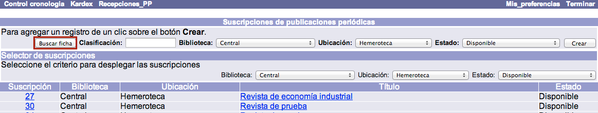
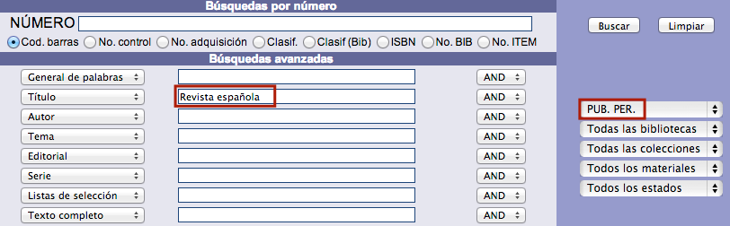
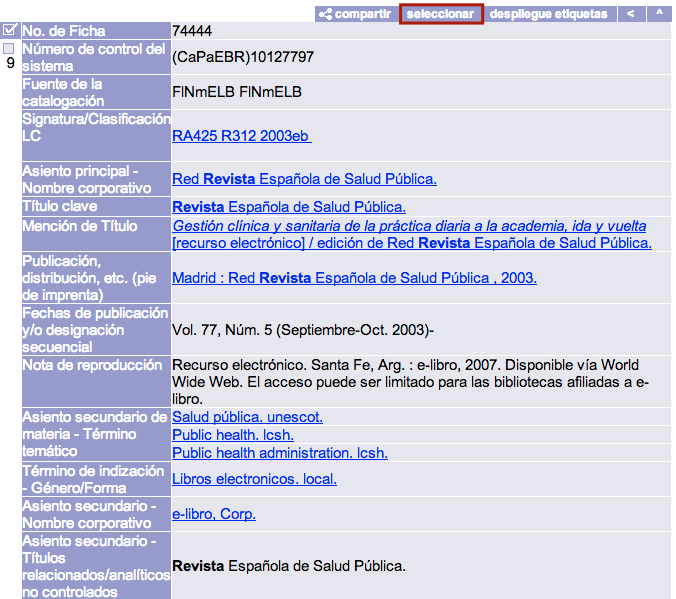
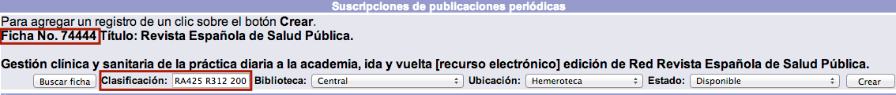
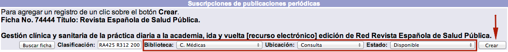
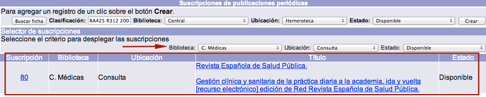
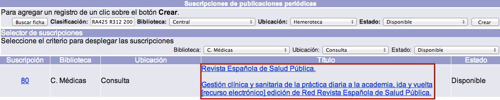
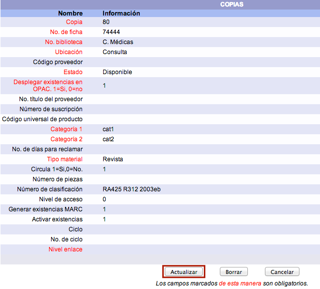

Creación de suscripciones
Para crear una suscripción se deben seleccionar únicamente registros bibliográficos creados con los formatos correspondientes a publicaciones periódicas. De esta forma, un registro creado con el formato Libro no permitirá asociarle una suscripción.
El procedimiento a seguir es el siguiente:
- Estando en la opción Suscripciones del módulo, hacer clic en el botón Buscar ficha para proceder a buscar el registro para el que se va a crear la suscripción.

- A continuación, el sistema despliega una ventana emergente con la opción de Búsqueda avanzada, donde introducir los términos deseados. Una vez encontrado y desplegado en detalle el registro en cuestión, hacer clic en el botón Seleccionar para elegirlo.
 
- De regreso a la pantalla de Suscripciones, se presenta el registro seleccionado, incorporando también los datos de número de ficha / registro y número de clasificación, si lo tiene. Si se desea que para la nueva suscripción se asigne un número de clasificación diferente al del registro, a los ítems creados al recibir los fascículos, puede introducirse este dato en el campo Clasificación.

- Elegir la Biblioteca, la Ubicación y el Estado de la suscripción mediante las listas desplegables habilitadas para ello. Esta acción es necesaria porque, aunque una publicación periódica se registra una sola vez, puede tener asociada más de una suscripción, por ejemplo, para responder a las necesidades de varias unidades dependientes de una misma institución. Hacer clic en el botón Crear.

- Finalmente, el sistema crea la suscripción y la muestra en la parte inferior de la pantalla del módulo, intercalando la información con los registros de suscripciones de otras publicaciones que ya puedan existir.

Edición de suscripciones
El procedimiento a seguir es el siguiente:
- Desde la lista de suscripciones creadas, hacer clic sobre el título de la publicación cuya suscripción se desea editar.

- Se muestra el formulario con los campos detallados de la suscripción. Hacer clic en el botón Actualizar para proceder a realizar los cambios necesarios. Los campos que se presentan son los siguientes:
- Copia: número que el sistema asigna automáticamente a la suscripción.
- No. de ficha: número del registro descriptivo para el que se creó la suscripción.
- Biblioteca: unidad institucional a la que pertenece la suscripción. Los fascículos recibidos serán asociados a esta biblioteca.
- Ubicación: sección / lugar en el que estarán los fascículos recibidos de la suscripción.
- Código proveedor: identificador del organismo que suministra la suscripción. Los avisos de reclamaciones se enviarán a la dirección de correo electrónico ingresada en el registro de este proveedor.
- Estado: situación (en relación al flujo de procesos de la institución) de los ítems creados al recibir los fascículos.
- Desplegar existencias en opac: si se asigna el valor 1, las existencias MARC creadas al recibir fascículos se muestran en el catálogo al público. Si se asigna el valor 0, esta acción no se produce.
- No. título del proveedor: identificador específico que opcionalmente puede asignar el organismo suministrador al título cuya suscripción se recibe.
- Número de suscripción: identificador de la suscripción, distinto al que aparece en el campo Copia, que opcionalmente puede ser asignado por el proveedor o por la institución.
- Código universal del producto: si los fascículos contienen este identificador, puede registrarse aquí.
- Categoría 1 y Categoría 2: al recibir un fascículo, a cada ítem creado se le asignan dos categorías estadísticas, que son las mismas a las utilizadas en el módulo de Control bibliográfico.
- No. de días para reclamar: cantidad de días que deben pasar, desde la fecha en que debió recibirse el fascículo (“fecha de esperado”), para que empiecen a generarse reclamaciones al proveedor.
- Tipo material: al recibir un fascículo, a cada ítem creado se le asigna un tipo de material, que son los mismos a los utilizados en el módulo de Control bibliográfico.
- Circula: si se asigna el valor 1, los ítems creados pueden ser prestados a los usuarios. Si se asigna el valor 0, esta acción no se produce.
- Número de piezas: cantidad de elementos que forman un ítem y que se agrupan bajo un solo código de barras.
- Número de clasificación: el cuál se asigna a los ítems creados al recibir los fascículos. Puede ser el ingresado al crear el registro de la suscripción o el extraído del registro de la publicación periódica.
- Nivel de acceso: identificador numérico jerárquico que determina si este registro va a estar restringido a ciertos operadores del módulo.
- Generar existencias MARC: si se asigna el valor 1, se crean existencias de este tipo al recibir los fascículos. Si se asigna el valor 0, esta acción no se produce.
- Activar existencias: si se asigna el valor 1, al recibir fascículos se crea un registro de ítem para cada uno de ellos. Si se asigna el valor 0, esta acción no se produce.
- Ciclo: fondo / partida presupuestal que se destina al pago de la suscripción al proveedor.
- No. ciclo: identificador numérico del fondo / partida presupuestal indicada.
- Nivel de enlace: cantidad de niveles que hay para esta suscripción. Cada nivel representa un tipo de fascículo. Por ejemplo, si se están recibiendo dos tipos: los de la edición regular y los del suplemento, cada uno tiene su propia designación cronológica y numérica, por lo tanto, se usan dos tipos y se tienen dos niveles.

- Después de haber llevado a cabo las modificaciones correspondientes, hacer clic de nuevo en el botón Actualizar para guardar los cambios realizados.